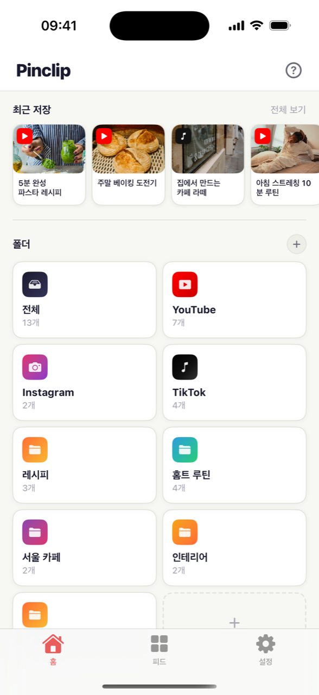
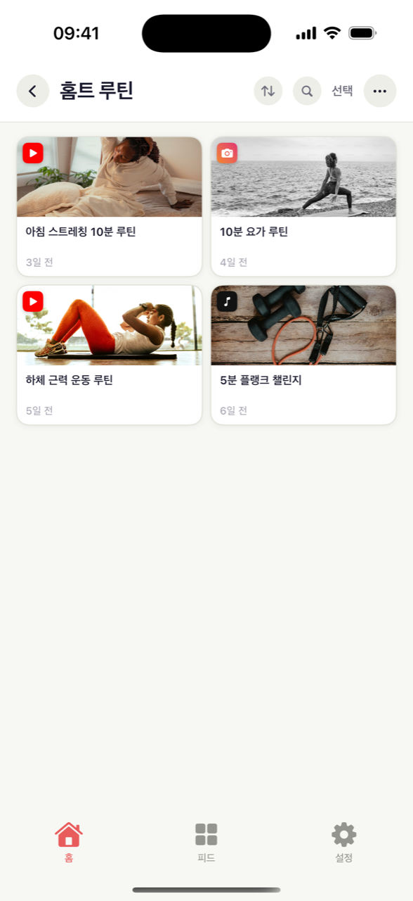
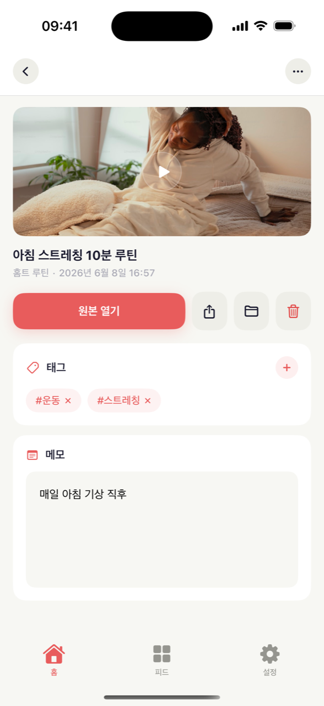
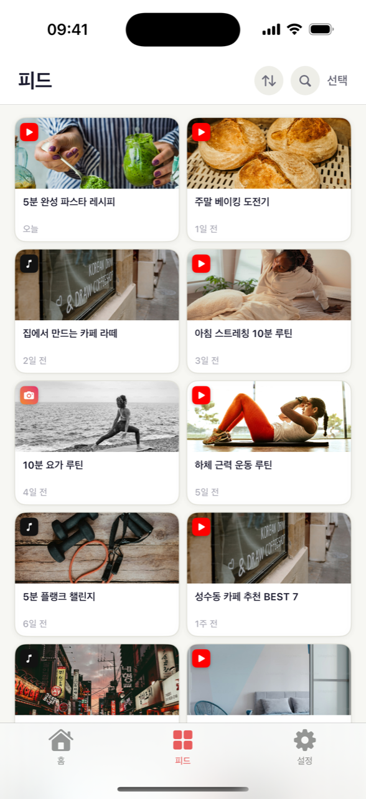

쇼츠나 릴스를 보다가 "이건 나중에 또 봐야지" 했던 영상, 막상 찾으려면 안 보이죠. Pinclip은 그런 영상을 모아 두는 저장함이에요. 영상의 공유 버튼을 누르고 Pinclip을 선택하면 끝 — 제목과 미리보기 사진이 자동으로 붙고, 폴더에 차곡차곡 정리됩니다.

유튜브·인스타·틱톡에서 영상을 보다가 마음에 들면, 밑에 있는 공유(화살표) 버튼을 누르고 Pinclip을 선택하세요. 보던 앱을 떠날 필요가 없어요.
영상의 제목과 미리보기 사진을 자동으로 가져와요. 내가 따로 적지 않아도, 저장함이 사진첩처럼 한눈에 보여요.
'요리', '운동'처럼 폴더를 만들어 영상을 넣어 두세요. 태그와 메모까지 달아 두면, 왜 저장했는지도 까먹지 않아요.
"지난주에 봤던 그 파스타 영상…" 제목도 채널도 기억나지 않을 때가 많죠. Pinclip에서는 폴더를 열거나 태그 하나만 누르면 바로 나와요. 이렇게요:
어느 앱에서 보던 영상이든 똑같은 방법으로 저장할 수 있어요. 유튜브와 틱톡 영상은 제목과 미리보기 사진까지 알아서 채워지고, 저장한 영상은 전부 한 저장함에서 검색돼요.
열심히 모은 '서울 카페' 폴더, 나만 보기 아깝잖아요. 폴더를 링크로 만들어 보내면, 친구는 앱이 없어도 브라우저에서 바로 볼 수 있어요. 친구도 Pinclip을 쓰고 있다면, 그 폴더를 통째로 자기 저장함에 가져갈 수도 있고요.



유튜브·인스타·틱톡을 끄지 않아도 돼요. 공유 버튼 → Pinclip, 두 번만 누르면 다시 영상으로 돌아가요.
자주 보는 폴더나 영상을 휴대폰 홈 화면에 붙여 둘 수 있어요. 잠금 풀고 한 번만 누르면 바로 영상이에요.
Pro를 쓰면 iPhone에서 저장한 영상이 iPad에도 똑같이 나타나요. 내 iCloud로 동기화되니까 안심이에요.
저장한 영상을 누르면 유튜브·인스타·틱톡의 원본으로 바로 이동해요. 다시 보는 건 탭 한 번이면 돼요.
유튜브에서 온 영상, 틱톡에서 온 영상을 Pinclip이 알아서 나눠 줘요. 따로 정리하지 않아도 플랫폼별로 모여요.
영상에 #요리 같은 태그를 붙이고, 저장한 이유를 메모로 남겨 보세요. 나중에 태그만 눌러도 관련 영상이 전부 나와요.